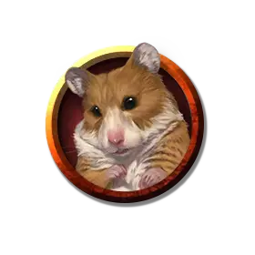

Космический хомяк
Space Hamster
Крошечный Монстр, обычно нейтрально-добрый

Класс Доспеха 15
Хиты 10 (4к4)
Скорость 20 футов, копая 5 футов
| мод | спас | ||
|---|---|---|---|
| СИЛ | 1 | −5 | −5 |
| ЛОВ | 20 | +5 | +5 |
| ТЕЛ | 10 | +0 | +0 |
| мод | спас | ||
|---|---|---|---|
| ИНТ | 6 | −2 | −2 |
| МДР | 12 | +1 | +1 |
| ХАР | 6 | −2 | −2 |
Навыки Восприятие +3, Скрытность +7
Чувства пассивное Восприятие 13
Языки Телепатия 5 фт.
Опасность 1/4 (50 опыта)
Бонус мастерства +2
Действия
Укус. . Рукопашная атака оружием: +7 к попаданию, досягаемость 5 футов, одна цель. Попадание: 1 колющий урон.
Целься в глаза (перезарядка 6). Рукопашная атака оружием: +7 к попаданию, досягаемость 5 футов, одно существо. Попадание: 8 (1к6 + 5) колющего урона, и цель должна преуспеть в спасброске Ловкости Сл 15, иначе станет ослеплённой до конца следующего хода хомяка.
Бонусные действия
Побег. Хомяк совершает действие Рывок или Отход.
Описание
Первые космические хомяки были созданы волшебниками, которые с помощью магии уменьшили их гигантских собратьев до мизерных размеров. В результате создатели стали называть их миниатюрными гигантскими космическими хомяками. Магия также сделала космических хомяков более умными и способными к телепатии.
Родина этих добродушных грызунов — Дикий космос. Бесчисленное множество этих животных попало в миры Материального плана, где они известны просто как хомяки. Они скрывают свои телепатические способности от большинства других близких им существ.
Космические хомяки
Космические хомяки напоминают своих земных сородичей как по внешнему виду, так и по поведению, и бывают разных расцветок.